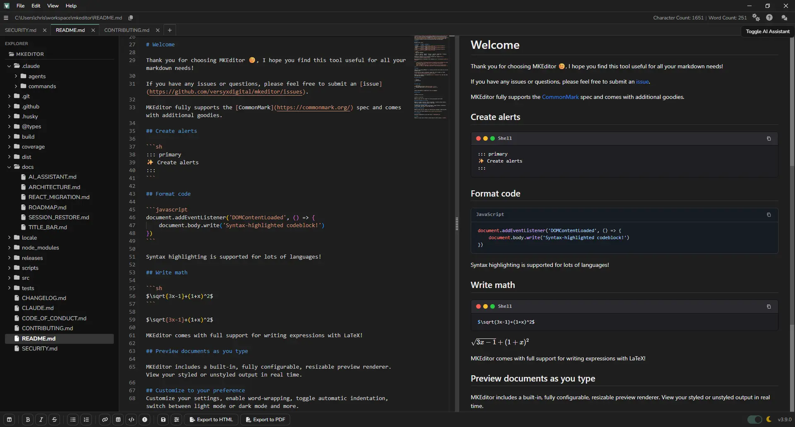
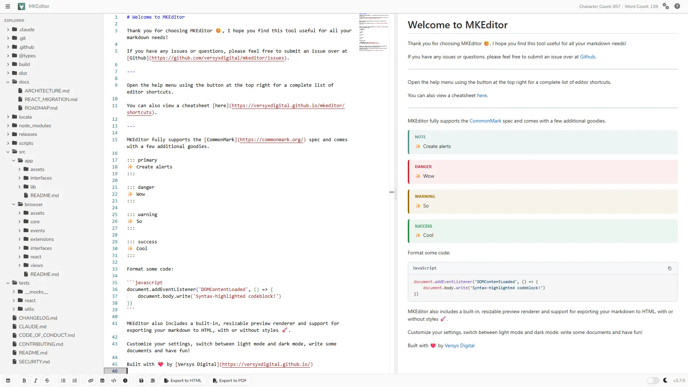
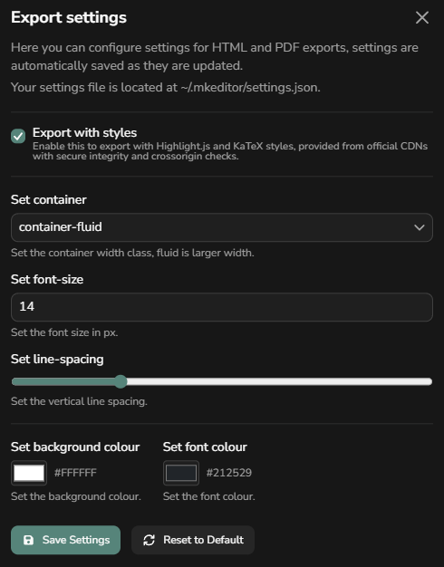
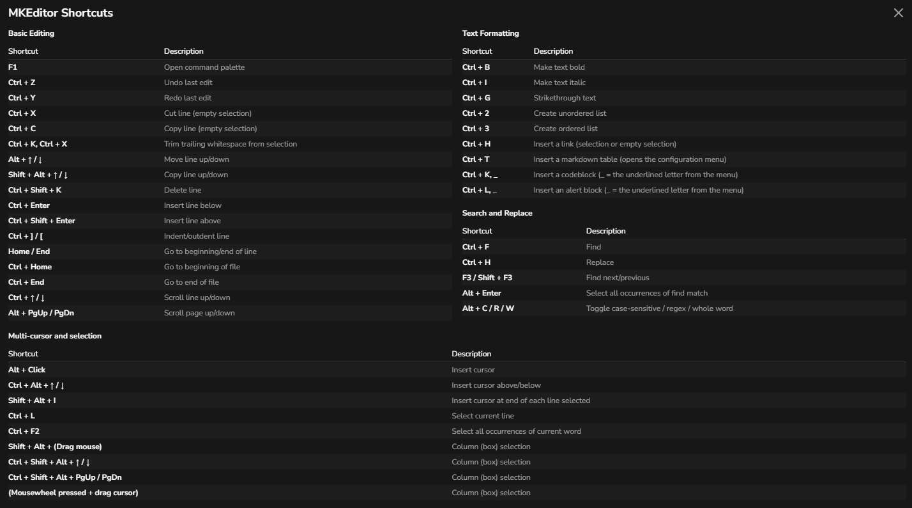

v3.8.1 - stable
Quickly and easily get started writing your markdown documents with MKEditor's rich set of features.


Quickly and easily get started writing your markdown documents with MKEditor's rich set of features.


Write markdown with confidence, with extra features for alerts, syntax highlighting, codeblock copying, and custom styling.
Built-in, resizable HTML preview enhanced with beautiful custom CSS, letting you see styled or unstyled output in real time.
Switch between light and dark mode, toggle word-wrap, and export your markdown to clean styled or unstyled HTML or PDF.
MKEditor stores its configuration settings in a JSON file located at
%USERPROFILE%/.mkeditor/settings.json.
If the file does not exist when the application starts, MKEditor automatically creates it with a full set of default values. This ensures the application is ready to run out of the box without requiring manual configuration.

Tip: Open settings via the icon in the app toolbar.
Enter,
following the indentation level of the previous line. This is especially
useful for lists, code blocks, and nested content.
Tip: Configure exports via the icon in the app toolbar.

Tip: View shortcuts via the icon in the app toolbar.

MKEditor is also available as a fully-featured web application, allowing you to write, preview, and export markdown directly in your browser without installing the desktop app. The web version offers the same CommonMark support, live preview renderer, and export options as the Electron-based application.
This makes it ideal for quick edits, collaborative sessions, or working on devices where installing software isn't possible. Simply visit the MKEditor web page to start writing instantly - no downloads, no setup, just open and go.
# Clone the repository $ git clone https://github.com/versyxdigital/mkeditor.git Cloning into 'mkeditor'... # Move in and install dependencies $ cd mkeditor $ npm install added 1247 packages in 38s
# Build the editor bundle and Electron app $ npm run build-editor $ npm run build-app # Package an installer for your platform $ npm run make-installer # Or run it locally with Electron $ npm run serve-app
Fetched live from the GitHub API when this section scrolls into view.
# Fetching git history from versyxdigital/mkeditor…